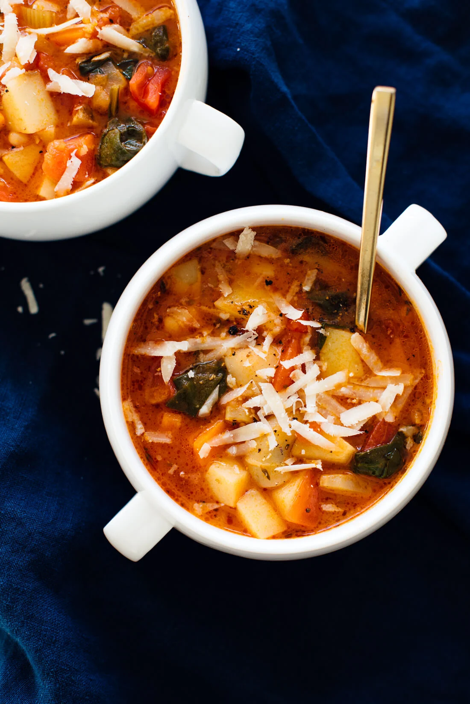

Minestrone Soup

Warm up with this vegetarian minestrone soup! This classic minestrone soup recipe is healthy, easy to make, and
tastes incredible. It's vegan, too, if you don't top it with cheese.
Finally! It’s about time this blog offered a traditional minestrone soup recipe. Minestrone is a hearty Italian
vegetable soup made with tomato-y broth and pasta or rice. I’ve been working hard on this recipe and I’m so excited
to share it with you.
Minestrone was traditionally made to use up leftover vegetables, so feel free to use any seasonal vegetables and
greens you have on hand. I used potatoes and spinach for the soup you see here, and it was absolutely delicious.
Ingredients
- 4 tbsp oil
- 1 medium yellow onion
- 2 medium carrots
- 2 medium ribs celery
- 1/4 cup tomato paste
- 2 cups chopped seasonal vegetables
- 4 cloves garlic
- 1/2 tsp dried oregano
- 1/2 tsp dried thyme
- 1 large can diced tomatoes
- 4 cups vegetable broth
- 2 cups water
- 1 tsp salt
- 2 bay leaves
- fresh ground black pepper
- 1 cup whole grain orzo
- 1 can bean medley
- 2 cups baby spinach
- 2 tsp lemon juice
Instruction
- Warm 3 tablespoons of the olive oil in a large Dutch oven or stockpot over medium heat. Once the oil is
shimmering, add the chopped onion, carrot, celery, tomato paste and a pinch of salt. Cook, stirring often, until
the vegetables have softened and the onions are turning translucent, about 7 to 10 minutes.
- Add the seasonal vegetables, garlic, oregano and thyme. Cook until fragrant while stirring frequently, about 2
minutes.
- Pour in the diced tomatoes and their juices, broth and water. Add the salt, bay leaves and red pepper flakes.
Season generously with freshly ground black pepper.
- Raise heat to medium-high and bring the mixture to a boil, then partially cover the pot with the lid, leaving
about a 1” gap for steam to escape. Reduce heat as necessary to maintain a gentle simmer.
- Cook for 15 minutes, then remove the lid and add the pasta, beans and greens. Continue simmering, uncovered, for
20 minutes or until the the pasta is cooked al dente and the greens are tender.
- Remove the pot from the heat, then remove the bay leaves. Stir in the lemon juice and remaining tablespoon of
olive oil. Taste and season with more salt (I usually add about ¼ teaspoon more) and pepper until the flavors
really sing. Garnish bowls of soup with grated Parmesan, if you’d like.
Home